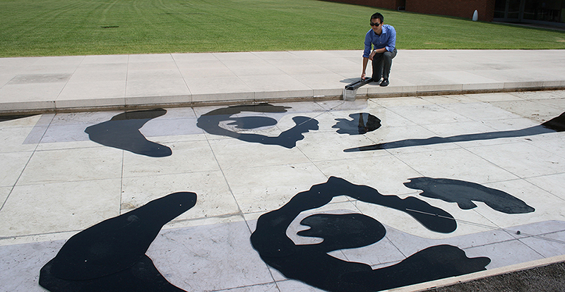
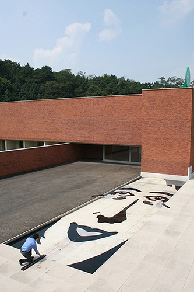
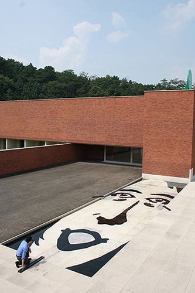

2015 July, Outdoor Kinetic Sculpture

 
Floating Identity in Korea is located in the granite pond in the Amore Pacific Sculpture Garden. The water on the granite pond is a metaphor for the fluidity of the modern society, and the image of the woman’s face submerged in the water is a symbol for the socially agreed-upon beauty and identity of the modern woman. The audience changes the facial expression using the manual handles; One handle changes the shape of the mouth and two handles control the angles of each eye and eyebrow respectively. It reveals the variation of the standards of beauty in today’s society.
Funding: Amore Pacific Museum
Exhibition
2015 July - October, "Researcher's Way", Young-In,Korea